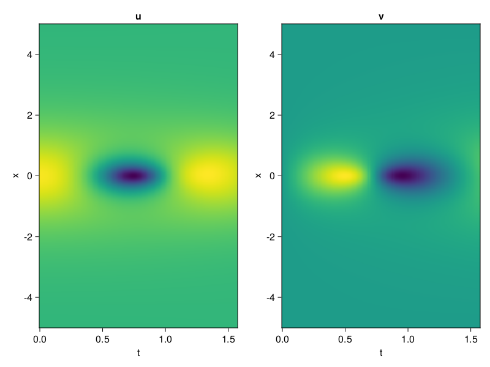
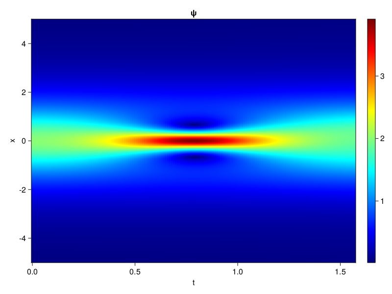
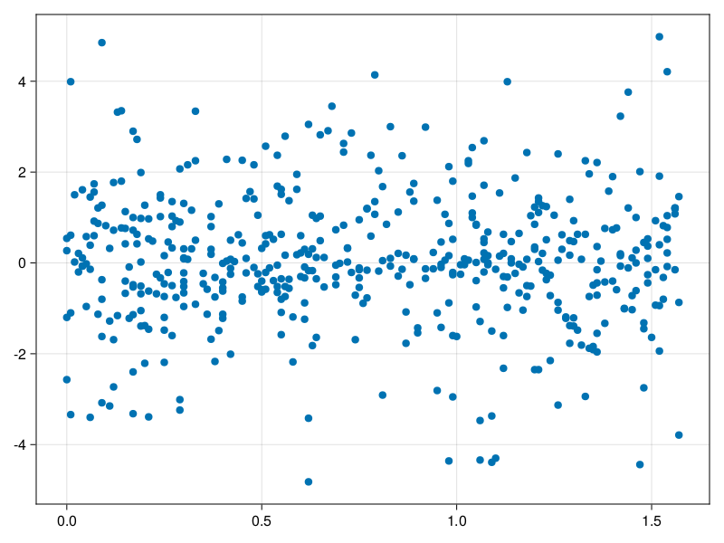

Schrödinger equation
The nonlinear Shrödinger equation is given by
\[\mathrm{i} \partial_t \psi=-\frac{1}{2} \sigma \partial_{x x} \psi-\beta|\psi|^2 \psi\]
Let $\sigma=\beta=1, \psi=u+v i$, the equation can be transformed into a system of partial differential equations
using ModelingToolkit, IntervalSets, Sophon, CairoMakie
using Optimization, OptimizationOptimJL
@parameters x,t
@variables u(..), v(..)
Dₜ = Differential(t)
Dₓ² = Differential(x)^2
eqs=[Dₜ(u(x,t)) ~ -Dₓ²(v(x,t))/2 - (abs2(v(x,t)) + abs2(u(x,t))) * v(x,t),
Dₜ(v(x,t)) ~ Dₓ²(u(x,t))/2 + (abs2(v(x,t)) + abs2(u(x,t))) * u(x,t)]
bcs = [u(x, 0.0) ~ 2sech(x),
v(x, 0.0) ~ 0.0,
u(-5.0, t) ~ u(5.0, t),
v(-5.0, t) ~ v(5.0, t)]
domains = [x ∈ Interval(-5.0, 5.0),
t ∈ Interval(0.0, π/2)]
@named pde_system = PDESystem(eqs, bcs, domains, [x,t], [u(x,t),v(x,t)])\[ \begin{align} \frac{\mathrm{d}}{\mathrm{d}t} u\left( x, t \right) =& - \frac{1}{2} \frac{\mathrm{d}}{\mathrm{d}x} \frac{\mathrm{d}}{\mathrm{d}x} v\left( x, t \right) - \left( \left|u\left( x, t \right)\right|^{2} + \left|v\left( x, t \right)\right|^{2} \right) v\left( x, t \right) \\ \frac{\mathrm{d}}{\mathrm{d}t} v\left( x, t \right) =& \frac{1}{2} \frac{\mathrm{d}}{\mathrm{d}x} \frac{\mathrm{d}}{\mathrm{d}x} u\left( x, t \right) + \left( \left|u\left( x, t \right)\right|^{2} + \left|v\left( x, t \right)\right|^{2} \right) u\left( x, t \right) \end{align} \]
pinn = PINN(u = Siren(2,1; hidden_dims=16,num_layers=4, omega = 1.0),
v = Siren(2,1; hidden_dims=16,num_layers=4, omega = 1.0))
sampler = QuasiRandomSampler(500, (200,200,20,20))
strategy = NonAdaptiveTraining(1,(10,10,1,1))
prob = Sophon.discretize(pde_system, pinn, sampler, strategy)OptimizationProblem. In-place: true
u0: ComponentVector{Float64}(u = (layer_1 = (weight = [0.37818825244903564 0.2369288206100464; 0.22953957319259644 -0.3752838969230652; … ; 0.3794082999229431 0.20624399185180664; 0.1829347014427185 0.3319205641746521], bias = [0.0; 0.0; … ; 0.0; 0.0;;]), layer_2 = (weight = [0.12994903326034546 -0.3803848326206207 … -0.16387365758419037 -0.4867139756679535; 0.2618272304534912 -0.0765266939997673 … 0.0749286413192749 -0.05465034767985344; … ; 0.565429151058197 0.3369296193122864 … -0.5896217226982117 -0.01684464141726494; 0.3629037141799927 -0.6086341142654419 … 0.15764665603637695 0.0513886883854866], bias = [0.0; 0.0; … ; 0.0; 0.0;;]), layer_3 = (weight = [-0.31939205527305603 0.06475456058979034 … 0.21409828960895538 0.21280865371227264; -0.019767653197050095 -0.6022180914878845 … 0.3355651795864105 0.32616424560546875; … ; -0.08105907589197159 0.28302037715911865 … -0.11283742636442184 -0.412338525056839; 0.17018112540245056 -0.30834993720054626 … -0.4904683232307434 0.42643654346466064], bias = [0.0; 0.0; … ; 0.0; 0.0;;]), layer_4 = (weight = [0.08308979868888855 0.4385020434856415 … -0.016818799078464508 0.0599670447409153; 0.6051292419433594 0.15102741122245789 … -0.01652095653116703 -0.24602337181568146; … ; -0.38137945532798767 0.17086119949817657 … 0.12569236755371094 0.455729216337204; 0.1870827078819275 -0.12790121138095856 … -0.5366566181182861 -0.2121661752462387], bias = [0.0; 0.0; … ; 0.0; 0.0;;]), layer_5 = (weight = [0.5994287729263306 0.0021499372087419033 … 0.4219398498535156 -0.2948214113712311], bias = [0.0;;])), v = (layer_1 = (weight = [-0.1306355595588684 -0.18079525232315063; 0.3101007342338562 -0.2620159387588501; … ; -0.26926469802856445 0.08191072940826416; -0.3346182107925415 0.2285863757133484], bias = [0.0; 0.0; … ; 0.0; 0.0;;]), layer_2 = (weight = [0.3483041822910309 -0.21864840388298035 … 0.596540629863739 0.24505895376205444; -0.2545900344848633 0.25240981578826904 … -0.3606489300727844 -0.28227415680885315; … ; -0.2546497583389282 -0.6085784435272217 … 0.11270522326231003 0.09118934720754623; 0.26236066222190857 0.4884626865386963 … -0.5076295137405396 -0.21082143485546112], bias = [0.0; 0.0; … ; 0.0; 0.0;;]), layer_3 = (weight = [0.26529818773269653 0.051216334104537964 … -0.4588731825351715 -0.2637048065662384; 0.3941792845726013 -0.08939704298973083 … 0.07622972875833511 -0.2572605609893799; … ; -0.513897716999054 0.4653424918651581 … -0.13183069229125977 -0.2737937569618225; 0.14569947123527527 0.3383815288543701 … 0.11035044491291046 -0.0011842137901112437], bias = [0.0; 0.0; … ; 0.0; 0.0;;]), layer_4 = (weight = [-0.018653666600584984 0.38270384073257446 … -0.4957457482814789 -0.005319179967045784; 0.4026430547237396 -0.41109374165534973 … -0.35257238149642944 0.40981170535087585; … ; 0.5611913800239563 0.6037297248840332 … 0.22725005447864532 -0.4054902195930481; -0.5079963207244873 0.6107358932495117 … -0.24444253742694855 0.0549093522131443], bias = [0.0; 0.0; … ; 0.0; 0.0;;]), layer_5 = (weight = [-0.560992956161499 0.06904115527868271 … -0.3601137697696686 -0.31276580691337585], bias = [0.0;;])))Now we train the neural nets and resample data while training.
function train(pde_system, prob, sampler, strategy, resample_period = 500, n=10)
bfgs = BFGS()
res = Optimization.solve(prob, bfgs; maxiters=2000)
for i in 1:n
data = Sophon.sample(pde_system, sampler)
prob = remake(prob; u0=res.u, p=data)
res = Optimization.solve(prob, bfgs; maxiters=resample_period)
end
return res
end
res = train(pde_system, prob, sampler, strategy)u: ComponentVector{Float64}(u = (layer_1 = (weight = [0.8068355123567974 0.60395546569877; 0.14234991631406937 -0.04123837142097195; … ; 1.5282222918075314 0.2747833472165136; 0.3179056056303574 0.1737113006657218], bias = [-0.1742968750315654; -0.29335210162615444; … ; -0.3499603358206916; -0.10248833549291601;;]), layer_2 = (weight = [0.04469939282538644 -0.3671039740712358 … 0.08500495333626774 -0.43834520255350795; 0.28666102170335367 -0.006625905999661759 … 0.09426850129798317 -0.2027692020957197; … ; 0.20367724349167457 0.30612117890490154 … -0.1273025171325379 0.060897515077014575; 0.03897821481967857 -0.7448350810139637 … 0.25091979330207903 0.17587927677218324], bias = [-0.14046024792417458; 0.15964253155482927; … ; -0.19427429292269188; 0.22627718366763977;;]), layer_3 = (weight = [-0.634400025710316 0.39787271574854854 … 0.4421070555684948 0.25852275260460805; 0.04289230288208387 -0.40587860996588354 … 0.6851850526702136 0.2949072927284287; … ; -0.11925339082785459 0.48820477484089697 … -0.13197579243463928 -0.33834093873624427; -0.009470755739794848 -0.4557163838363521 … -0.5625176041533448 0.2153693631705126], bias = [-0.21161389295457828; -0.35917946480657037; … ; 0.251074539943433; 0.2895253622926611;;]), layer_4 = (weight = [0.005691028769974933 1.0483563919412606 … 0.2550036799125497 0.17611664987526876; 0.8117109452375655 0.11386213486891482 … -0.09149936472561124 -0.29037551797195754; … ; -0.39818018074475314 0.050078961967167844 … 0.11062671643996082 0.35407751195010684; 0.41797950952919677 -0.30290845492442375 … -0.6998359557504961 -0.10282941221608145], bias = [0.07694977452089086; 0.055782991027180304; … ; 0.42036757677408804; -0.11129720019114488;;]), layer_5 = (weight = [0.2673887734364403 -0.44190828004390614 … 0.39550564248294623 -0.31030827492841756], bias = [0.2808341511053818;;])), v = (layer_1 = (weight = [-0.39656616949889456 -0.2573895819166924; 0.4499263504868041 -0.17191769899645973; … ; -0.2692072520820692 0.068028000134598; -0.40339262000406617 0.0901895115168321], bias = [-0.38720149909478063; 0.19563663136141687; … ; -0.22553831454037546; 0.17535875797783826;;]), layer_2 = (weight = [0.06644441101696942 -0.23510346787447867 … 0.31311403222784306 0.17148826062219935; -0.4551229403697332 0.012662542458155917 … 0.08107743002085759 0.30889638489257143; … ; -0.2080503871445816 -0.8355756038387875 … 0.2749105534805674 0.4301245371800924; 0.09631387104366794 0.5599169926395188 … -0.5054639058183383 -0.18346629931188824], bias = [-0.09632009325114436; 0.7077432275890541; … ; -0.026550215174898202; -0.13625664170475926;;]), layer_3 = (weight = [0.21866287548032398 0.3954905072633617 … -0.5376547724001998 -0.3578121095131305; 0.3635299627764508 0.06326852266281602 … 0.045364866730372044 -0.4011440003761971; … ; -0.5150071236860737 -0.014523932799009256 … -0.09482670366335941 -0.16445252428352772; 0.11357619071912997 0.28840053759571677 … -0.2716441181591133 0.17943346476474648], bias = [0.1821814649601529; -0.11533906562389473; … ; -0.15415972764503655; -0.44712145223303845;;]), layer_4 = (weight = [0.24076524038123945 -0.06333924728481366 … -0.1356188769883431 0.3726394401976347; 0.47165708945718576 -0.4026406999587064 … -0.537829349789001 0.2710753482120053; … ; -0.07051287258912044 0.6875575361739548 … -0.024494280595327045 -0.005418618601367927; -0.27735199075462985 0.7332249435742286 … -0.6204595881414785 0.03455098875135726], bias = [-0.11821475493919585; -0.005408311869275127; … ; 0.36620284559137206; 0.22209905937555496;;]), layer_5 = (weight = [-0.5050715397222486 -0.0004620380016225786 … -0.52939494566126 -0.6277755900546146], bias = [0.2839733994824209;;])))phi = pinn.phi
ps = res.u
xs, ts= [infimum(d.domain):0.01:supremum(d.domain) for d in pde_system.domain]
u = [sum(phi.u(([x,t]), ps.u)) for x in xs, t in ts]
v = [sum(phi.v(([x,t]), ps.v)) for x in xs, t in ts]
ψ = @. sqrt(u^2+ v^2)
axis = (xlabel="t", ylabel="x", title="u")
fig, ax1, hm1 = heatmap(ts, xs, u', axis=axis)
ax2, hm2= heatmap(fig[1, end+1], ts, xs, v', axis= merge(axis, (; title="v")))
display(fig)
axis = (xlabel="t", ylabel="x", title="ψ")
fig, ax1, hm1 = heatmap(ts, xs, ψ', axis=axis, colormap=:jet)
Colorbar(fig[:, end+1], hm1)
display(fig)
Customize Sampling
Bascially any sampling method is supportted. For example we can sample data according to the predicted solution.
using StatsBase
data = vec([[x, t] for x in xs, t in ts])
wv = vec(ψ)
new_data = wsample(data, wv, 500)
new_data = reduce(hcat, new_data)
fig, ax = scatter(new_data[2,:], new_data[1,:])
prob.p[1] = new_data
prob.p[2] = new_data
prob = remake(prob; u0 = res.u)
# res = Optimization.solve(prob, bfgs; maxiters=1000)OptimizationProblem. In-place: true
u0: ComponentVector{Float64}(u = (layer_1 = (weight = [0.8068355123567974 0.60395546569877; 0.14234991631406937 -0.04123837142097195; … ; 1.5282222918075314 0.2747833472165136; 0.3179056056303574 0.1737113006657218], bias = [-0.1742968750315654; -0.29335210162615444; … ; -0.3499603358206916; -0.10248833549291601;;]), layer_2 = (weight = [0.04469939282538644 -0.3671039740712358 … 0.08500495333626774 -0.43834520255350795; 0.28666102170335367 -0.006625905999661759 … 0.09426850129798317 -0.2027692020957197; … ; 0.20367724349167457 0.30612117890490154 … -0.1273025171325379 0.060897515077014575; 0.03897821481967857 -0.7448350810139637 … 0.25091979330207903 0.17587927677218324], bias = [-0.14046024792417458; 0.15964253155482927; … ; -0.19427429292269188; 0.22627718366763977;;]), layer_3 = (weight = [-0.634400025710316 0.39787271574854854 … 0.4421070555684948 0.25852275260460805; 0.04289230288208387 -0.40587860996588354 … 0.6851850526702136 0.2949072927284287; … ; -0.11925339082785459 0.48820477484089697 … -0.13197579243463928 -0.33834093873624427; -0.009470755739794848 -0.4557163838363521 … -0.5625176041533448 0.2153693631705126], bias = [-0.21161389295457828; -0.35917946480657037; … ; 0.251074539943433; 0.2895253622926611;;]), layer_4 = (weight = [0.005691028769974933 1.0483563919412606 … 0.2550036799125497 0.17611664987526876; 0.8117109452375655 0.11386213486891482 … -0.09149936472561124 -0.29037551797195754; … ; -0.39818018074475314 0.050078961967167844 … 0.11062671643996082 0.35407751195010684; 0.41797950952919677 -0.30290845492442375 … -0.6998359557504961 -0.10282941221608145], bias = [0.07694977452089086; 0.055782991027180304; … ; 0.42036757677408804; -0.11129720019114488;;]), layer_5 = (weight = [0.2673887734364403 -0.44190828004390614 … 0.39550564248294623 -0.31030827492841756], bias = [0.2808341511053818;;])), v = (layer_1 = (weight = [-0.39656616949889456 -0.2573895819166924; 0.4499263504868041 -0.17191769899645973; … ; -0.2692072520820692 0.068028000134598; -0.40339262000406617 0.0901895115168321], bias = [-0.38720149909478063; 0.19563663136141687; … ; -0.22553831454037546; 0.17535875797783826;;]), layer_2 = (weight = [0.06644441101696942 -0.23510346787447867 … 0.31311403222784306 0.17148826062219935; -0.4551229403697332 0.012662542458155917 … 0.08107743002085759 0.30889638489257143; … ; -0.2080503871445816 -0.8355756038387875 … 0.2749105534805674 0.4301245371800924; 0.09631387104366794 0.5599169926395188 … -0.5054639058183383 -0.18346629931188824], bias = [-0.09632009325114436; 0.7077432275890541; … ; -0.026550215174898202; -0.13625664170475926;;]), layer_3 = (weight = [0.21866287548032398 0.3954905072633617 … -0.5376547724001998 -0.3578121095131305; 0.3635299627764508 0.06326852266281602 … 0.045364866730372044 -0.4011440003761971; … ; -0.5150071236860737 -0.014523932799009256 … -0.09482670366335941 -0.16445252428352772; 0.11357619071912997 0.28840053759571677 … -0.2716441181591133 0.17943346476474648], bias = [0.1821814649601529; -0.11533906562389473; … ; -0.15415972764503655; -0.44712145223303845;;]), layer_4 = (weight = [0.24076524038123945 -0.06333924728481366 … -0.1356188769883431 0.3726394401976347; 0.47165708945718576 -0.4026406999587064 … -0.537829349789001 0.2710753482120053; … ; -0.07051287258912044 0.6875575361739548 … -0.024494280595327045 -0.005418618601367927; -0.27735199075462985 0.7332249435742286 … -0.6204595881414785 0.03455098875135726], bias = [-0.11821475493919585; -0.005408311869275127; … ; 0.36620284559137206; 0.22209905937555496;;]), layer_5 = (weight = [-0.5050715397222486 -0.0004620380016225786 … -0.52939494566126 -0.6277755900546146], bias = [0.2839733994824209;;])))